Introduction
The rtabpfn package supports unsupervised anomaly
detection through the tabpfn-extensions library. This
approach uses TabPFN’s joint probability estimation to identify
observations that deviate significantly from the learned data
distribution. Anomaly scores represent the likelihood of each
observation - lower scores indicate more anomalous data points.
Setup
First, ensure the Python environment is configured with tabpfn-extensions:
Load required packages:
##
## Attaching package: 'dplyr'## The following objects are masked from 'package:stats':
##
## filter, lag## The following objects are masked from 'package:base':
##
## intersect, setdiff, setequal, unionBasic Anomaly Detection
Let’s use the mtcars dataset to detect anomalous
vehicles:
# Load data
data(mtcars)
# Prepare features
X <- mtcars[, c("cyl", "disp", "hp", "wt", "qsec", "am", "gear")]
# Train unsupervised model
model <- tab_pfn_unsupervised(X, n_estimators = 4, device = "auto")## Creating TabPFN Unsupervised Anomaly Detection Model
##
## Initializing TabPFNClassifier with 4 estimators...
## Initializing TabPFNRegressor with 4 estimators...
## Initializing TabPFNUnsupervisedModel...
## Fitting unsupervised model...
##
## Unsupervised model training complete!
# Calculate anomaly scores
scores <- anomaly_scores(model, X, n_permutations = 10, verbose = TRUE)## Computing anomaly scores...
## Input data dimensions: 32 x 7
## Computing with 10 permutations...
## Done! Score range: 0.2061268 - 59.67083
head(scores)## # A tibble: 6 × 2
## observation anomaly_score
## <chr> <dbl>
## 1 .obs_1 2.80
## 2 .obs_2 1.54
## 3 .obs_3 1.27
## 4 .obs_4 1.86
## 5 .obs_5 0.312
## 6 .obs_6 1.83Understanding Anomaly Scores
# Add scores to original data
mtcars_with_scores <- mtcars %>%
mutate(
observation = scores$observation,
anomaly_score = scores$anomaly_score,
car_name = rownames(.)
)
# Summary statistics
summary(mtcars_with_scores$anomaly_score)## Min. 1st Qu. Median Mean 3rd Qu. Max.
## 0.2061 0.5412 1.7375 6.4449 5.2671 59.6708
# Find most anomalous vehicles
most_anomalous <- mtcars_with_scores %>%
arrange(anomaly_score) %>%
head(10)
print(most_anomalous[, c("car_name", "anomaly_score", "mpg", "cyl", "hp", "wt")])## car_name anomaly_score mpg cyl hp wt
## AMC Javelin AMC Javelin 0.2061268 15.2 8 150 3.435
## Dodge Challenger Dodge Challenger 0.2446634 15.5 8 150 3.520
## Merc 450SL Merc 450SL 0.2488258 17.3 8 180 3.730
## Hornet Sportabout Hornet Sportabout 0.3119090 18.7 8 175 3.440
## Merc 450SLC Merc 450SLC 0.3575786 15.2 8 180 3.780
## Pontiac Firebird Pontiac Firebird 0.3619120 19.2 8 175 3.845
## Lincoln Continental Lincoln Continental 0.4486681 10.4 8 215 5.424
## Cadillac Fleetwood Cadillac Fleetwood 0.4926781 10.4 8 205 5.250
## Merc 450SE Merc 450SE 0.5573251 16.4 8 180 4.070
## Chrysler Imperial Chrysler Imperial 0.6676782 14.7 8 230 5.345Visualizing Anomaly Scores
Anomaly Score Distribution
ggplot(mtcars_with_scores, aes(x = anomaly_score)) +
geom_histogram(bins = 20, fill = "steelblue", color = "white", alpha = 0.7) +
geom_vline(xintercept = median(mtcars_with_scores$anomaly_score),
linetype = "dashed", color = "darkred") +
labs(title = "Distribution of Anomaly Scores",
subtitle = "Lower scores indicate more anomalous observations",
x = "Anomaly Score",
y = "Frequency") +
theme_minimal()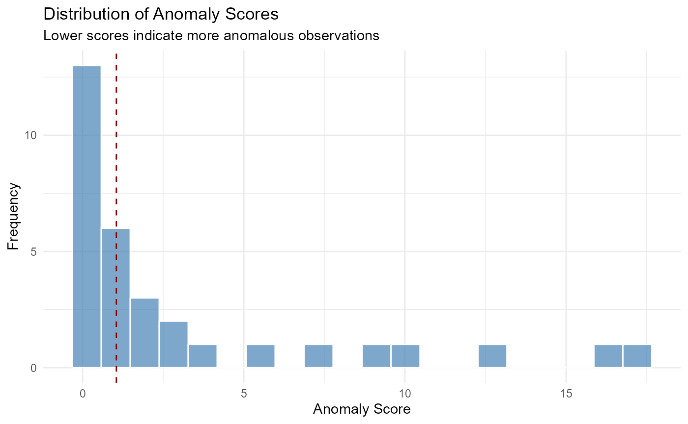
Anomaly Scores by Feature
# Anomaly score vs MPG
ggplot(mtcars_with_scores, aes(x = mpg, y = anomaly_score)) +
geom_point(color = "steelblue", size = 3, alpha = 0.7) +
geom_smooth(method = "loess", se = TRUE, color = "darkred", linetype = "dashed") +
labs(title = "Anomaly Score vs MPG",
x = "Miles Per Gallon",
y = "Anomaly Score") +
theme_minimal()## `geom_smooth()` using formula = 'y ~ x'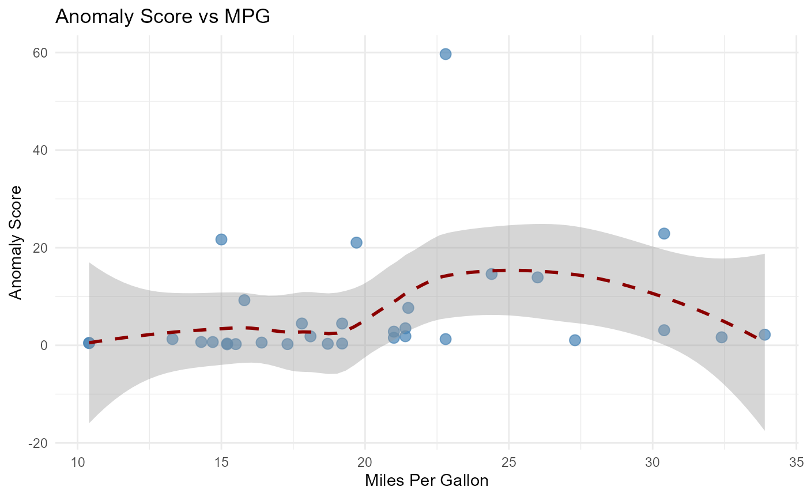
# Anomaly score vs Horsepower
ggplot(mtcars_with_scores, aes(x = hp, y = anomaly_score)) +
geom_point(color = "steelblue", size = 3, alpha = 0.7) +
geom_smooth(method = "loess", se = TRUE, color = "darkred", linetype = "dashed") +
labs(title = "Anomaly Score vs Horsepower",
x = "Horsepower",
y = "Anomaly Score") +
theme_minimal()## `geom_smooth()` using formula = 'y ~ x'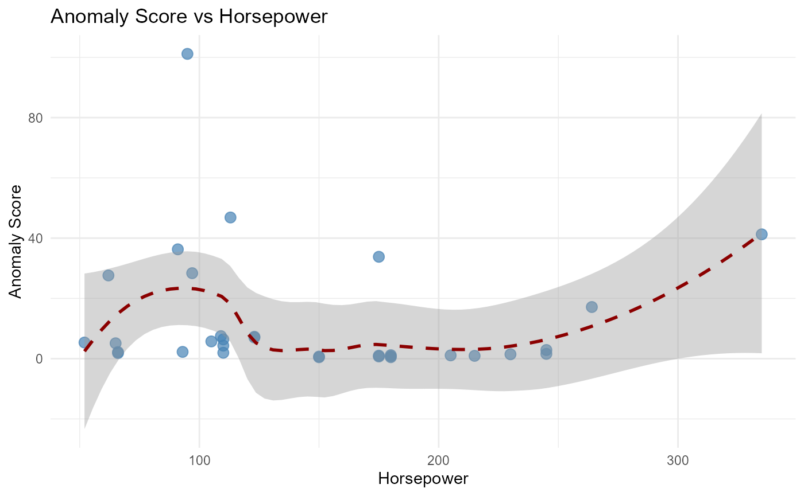
Feature Space with Anomaly Highlighting
# Identify top 10% most anomalous
threshold <- quantile(mtcars_with_scores$anomaly_score, 0.90)
mtcars_with_scores$is_anomaly <- mtcars_with_scores$anomaly_score >= threshold
ggplot(mtcars_with_scores, aes(x = wt, y = hp)) +
geom_point(aes(color = is_anomaly), size = 3, alpha = 0.8) +
geom_text(data = mtcars_with_scores %>% filter(is_anomaly),
aes(label = car_name), size = 2, hjust = -0.1, vjust = 0.5) +
scale_color_manual(values = c("FALSE" = "steelblue", "TRUE" = "darkred"),
labels = c("FALSE" = "Normal", "TRUE" = "Anomalous")) +
labs(title = "Feature Space: Weight vs Horsepower",
subtitle = paste("Top 10% most anomalous highlighted (n =", sum(mtcars_with_scores$is_anomaly), ")"),
x = "Weight (1000 lbs)",
y = "Horsepower",
color = "Classification") +
theme_minimal() +
theme(legend.position = "bottom")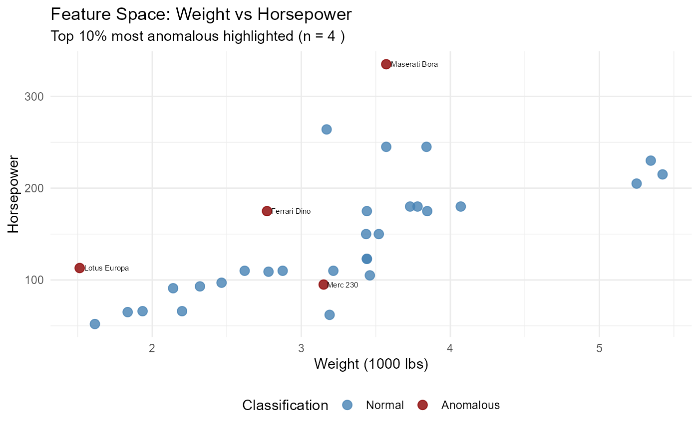
Detailed Anomaly Analysis
Multi-Feature Comparison
# Compare normal vs anomalous across features
mtcars_with_scores$is_anomaly_10pct <- mtcars_with_scores$anomaly_score >=
quantile(mtcars_with_scores$anomaly_score, 0.90)
feature_long <- mtcars_with_scores %>%
select(is_anomaly_10pct, cyl, disp, hp, wt, qsec) %>%
pivot_longer(cols = c(cyl, disp, hp, wt, qsec),
names_to = "feature",
values_to = "value") %>%
mutate(
feature_label = case_when(
feature == "cyl" ~ "Cylinders",
feature == "disp" ~ "Displacement (cu.in.)",
feature == "hp" ~ "Horsepower",
feature == "wt" ~ "Weight (1000 lbs)",
feature == "qsec" ~ "1/4 mile time (sec)"
),
type = ifelse(is_anomaly_10pct, "Anomalous", "Normal")
)
ggplot(feature_long, aes(x = type, y = value, fill = type)) +
geom_boxplot(alpha = 0.7) +
facet_wrap(~ feature_label, scales = "free_y") +
scale_fill_manual(values = c("Normal" = "steelblue", "Anomalous" = "darkred")) +
labs(title = "Feature Comparison: Normal vs Anomalous Vehicles",
subtitle = "Top 10% most anomalous vs rest",
x = "Classification",
y = "Feature Value",
fill = "Classification") +
theme_minimal() +
theme(axis.text.x = element_text(angle = 45, hjust = 1),
legend.position = "none")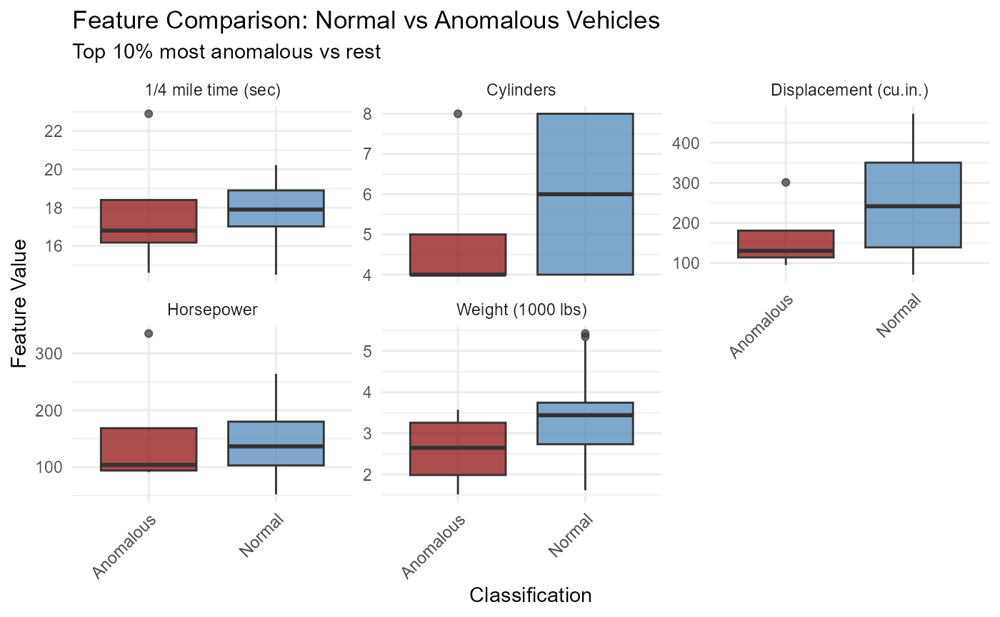
PCA Visualization
# Perform PCA for 2D visualization
pca_result <- prcomp(mtcars[, c("cyl", "disp", "hp", "wt", "qsec")],
scale. = TRUE)
mtcars_with_scores <- mtcars_with_scores %>%
mutate(
PC1 = pca_result$x[, 1],
PC2 = pca_result$x[, 2]
)
ggplot(mtcars_with_scores, aes(x = PC1, y = PC2)) +
geom_point(aes(color = anomaly_score), size = 3, alpha = 0.7) +
geom_point(data = mtcars_with_scores %>% filter(is_anomaly),
shape = 21, size = 4, stroke = 2, color = "darkred", fill = NA) +
scale_color_gradient2(low = "darkgreen", mid = "yellow", high = "darkred",
midpoint = median(mtcars_with_scores$anomaly_score)) +
labs(title = "PCA Projection with Anomaly Highlighting",
subtitle = "Color = anomaly score | Red circles = top 10% anomalies",
x = paste0("PC1 (", round(summary(pca_result)$importance[2, 1] * 100, 1), "% variance)"),
y = paste0("PC2 (", round(summary(pca_result)$importance[2, 2] * 100, 1), "% variance)"),
color = "Anomaly Score") +
theme_minimal()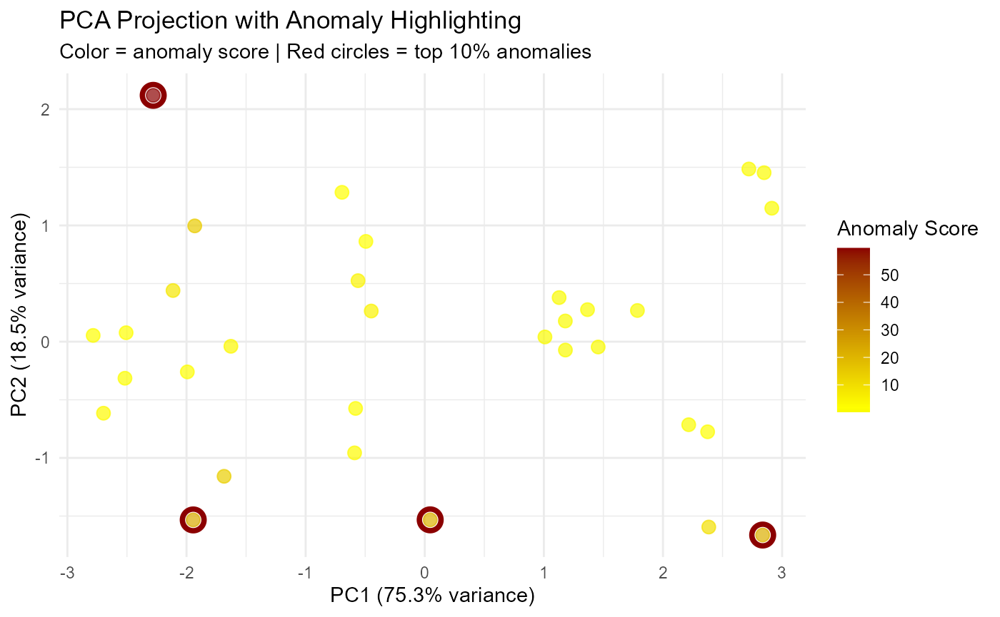
Threshold Selection
Finding Optimal Threshold
# Examine different percentiles
thresholds <- c(0.95, 0.90, 0.85, 0.80, 0.75)
threshold_comparison <- data.frame(
percentile = thresholds,
threshold_score = sapply(thresholds, function(p) quantile(mtcars_with_scores$anomaly_score, p)),
n_anomalies = sapply(thresholds, function(p) sum(mtcars_with_scores$anomaly_score >= quantile(mtcars_with_scores$anomaly_score, p)))
)
print(threshold_comparison)## percentile threshold_score n_anomalies
## 95% 0.95 22.226374 2
## 90% 0.90 20.398697 4
## 85% 0.85 14.158347 5
## 80% 0.80 8.926723 7
## 75% 0.75 5.267123 8
# Plot
ggplot(threshold_comparison, aes(x = percentile * 100, y = n_anomalies)) +
geom_line(color = "steelblue", linewidth = 1) +
geom_point(color = "darkred", size = 3) +
labs(title = "Number of Anomalies by Threshold Percentile",
x = "Percentile Threshold (%)",
y = "Number of Anomalies") +
scale_x_continuous(breaks = thresholds * 100) +
theme_minimal()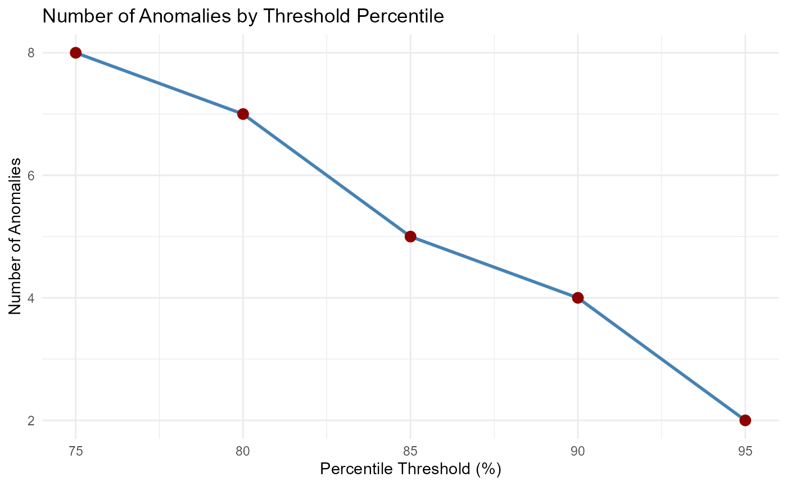
Anomaly Classification with Threshold
# Classify as anomaly if score below 10th percentile
threshold_10 <- quantile(mtcars_with_scores$anomaly_score, 0.90)
mtcars_classified <- mtcars_with_scores %>%
mutate(
is_anomaly_10pct = anomaly_score >= threshold_10,
classification = ifelse(is_anomaly_10pct, "Anomaly", "Normal")
)
# Summary
summary_table <- mtcars_classified %>%
group_by(classification) %>%
summarise(
n = n(),
mean_mpg = mean(mpg),
mean_hp = mean(hp),
mean_wt = mean(wt),
.groups = "drop"
)
print(summary_table)## # A tibble: 2 × 5
## classification n mean_mpg mean_hp mean_wt
## <chr> <int> <dbl> <dbl> <dbl>
## 1 Anomaly 4 22.0 180. 2.75
## 2 Normal 28 19.8 142 3.28
# Visualize
ggplot(mtcars_classified, aes(x = classification, y = mpg)) +
geom_boxplot(aes(fill = classification), alpha = 0.7) +
scale_fill_manual(values = c("Normal" = "steelblue", "Anomaly" = "darkred")) +
labs(title = "MPG Distribution: Normal vs Anomalous",
x = "Classification",
y = "Miles Per Gallon",
fill = "Classification") +
theme_minimal()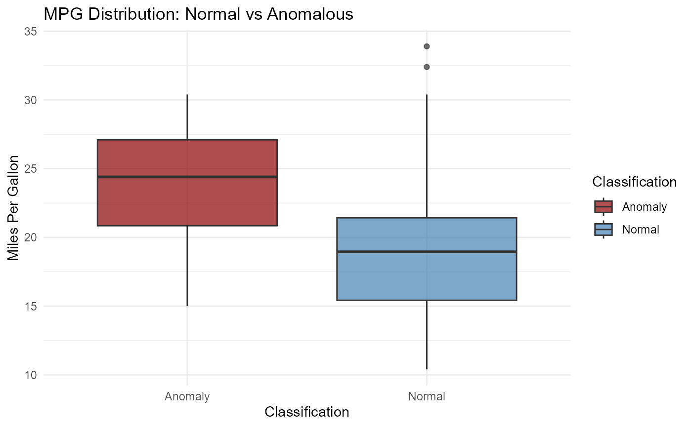
Analyzing Specific Anomalies
Detailed Inspection
# Get top 5 most anomalous cars
top_anomalies <- mtcars_with_scores %>%
arrange(anomaly_score) %>%
head(5)
print(top_anomalies[, c("car_name", "anomaly_score", "mpg", "cyl", "disp", "hp", "wt", "qsec", "am", "gear")])## car_name anomaly_score mpg cyl disp hp wt
## AMC Javelin AMC Javelin 0.2061268 15.2 8 304.0 150 3.435
## Dodge Challenger Dodge Challenger 0.2446634 15.5 8 318.0 150 3.520
## Merc 450SL Merc 450SL 0.2488258 17.3 8 275.8 180 3.730
## Hornet Sportabout Hornet Sportabout 0.3119090 18.7 8 360.0 175 3.440
## Merc 450SLC Merc 450SLC 0.3575786 15.2 8 275.8 180 3.780
## qsec am gear
## AMC Javelin 17.30 0 3
## Dodge Challenger 16.87 0 3
## Merc 450SL 17.60 0 3
## Hornet Sportabout 17.02 0 3
## Merc 450SLC 18.00 0 3
# Compare each anomaly to median values
median_values <- mtcars_with_scores %>%
summarise(
median_mpg = median(mpg),
median_hp = median(hp),
median_wt = median(wt),
median_qsec = median(qsec)
)
cat("\n=== Median Values (Normal) ===\n")##
## === Median Values (Normal) ===
print(median_values)## median_mpg median_hp median_wt median_qsec
## 1 19.2 123 3.325 17.71
cat("\n=== Anomaly Deviation from Median ===\n")##
## === Anomaly Deviation from Median ===
anomaly_deviation <- top_anomalies %>%
select(car_name, mpg, hp, wt, qsec) %>%
mutate(
mpg_diff = mpg - median_values$median_mpg,
hp_diff = hp - median_values$median_hp,
wt_diff = wt - median_values$median_wt,
qsec_diff = qsec - median_values$median_qsec
)
print(anomaly_deviation[, c("car_name", "mpg_diff", "hp_diff", "wt_diff", "qsec_diff")])## car_name mpg_diff hp_diff wt_diff qsec_diff
## AMC Javelin AMC Javelin -4.0 27 0.110 -0.41
## Dodge Challenger Dodge Challenger -3.7 27 0.195 -0.84
## Merc 450SL Merc 450SL -1.9 57 0.405 -0.11
## Hornet Sportabout Hornet Sportabout -0.5 52 0.115 -0.69
## Merc 450SLC Merc 450SLC -4.0 57 0.455 0.29Parallel Coordinates Plot
# Prepare data for parallel coordinates
parallel_df <- mtcars_with_scores %>%
select(observation,is_anomaly_10pct, mpg, hp, wt, qsec, gear) %>%
mutate(is_anomaly_10pct = ifelse(is_anomaly_10pct, "Anomaly", "Normal")) %>%
pivot_longer(cols = c(mpg, hp, wt, qsec, gear),
names_to = "feature",
values_to = "value") %>%
mutate(
feature_label = case_when(
feature == "mpg" ~ "MPG",
feature == "hp" ~ "Horsepower",
feature == "wt" ~ "Weight",
feature == "qsec" ~ "1/4 mile time",
feature == "gear" ~ "Gears"
),
# Normalize within features
value_norm = as.numeric(scale(value))
)
ggplot(parallel_df, aes(x = feature_label, y = value_norm, color = is_anomaly_10pct, group = observation)) +
geom_line(alpha = 0.3) +
stat_summary(fun = mean, geom = "line", linewidth = 2) +
scale_color_manual(values = c("Normal" = "steelblue", "Anomaly" = "darkred")) +
labs(title = "Parallel Coordinates: Normal vs Anomalous",
subtitle = "Thick lines show mean profiles",
x = "Feature",
y = "Normalized Value",
color = "Classification") +
theme_minimal() +
theme(axis.text.x = element_text(angle = 45, hjust = 1))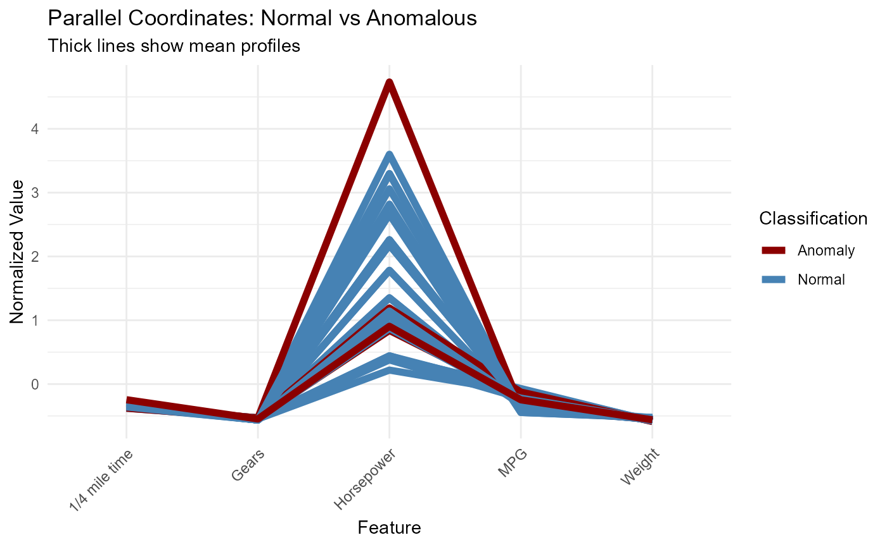
Time-Series Style Anomaly Detection
# Order by one feature (e.g., weight) to simulate time-series
mtcars_ordered <- mtcars_with_scores %>%
arrange(wt) %>%
mutate(order_idx = row_number())
ggplot(mtcars_ordered, aes(x = order_idx, y = anomaly_score)) +
geom_line(color = "gray70") +
geom_point(aes(color = is_anomaly), size = 3) +
geom_hline(yintercept = threshold_10, linetype = "dashed", color = "darkred") +
scale_color_manual(values = c("FALSE" = "steelblue", "TRUE" = "darkred")) +
labs(title = "Anomaly Scores by Vehicle Weight Order",
subtitle = "Dashed line = 10th percentile threshold",
x = "Order by Weight",
y = "Anomaly Score",
color = "Anomaly") +
theme_minimal()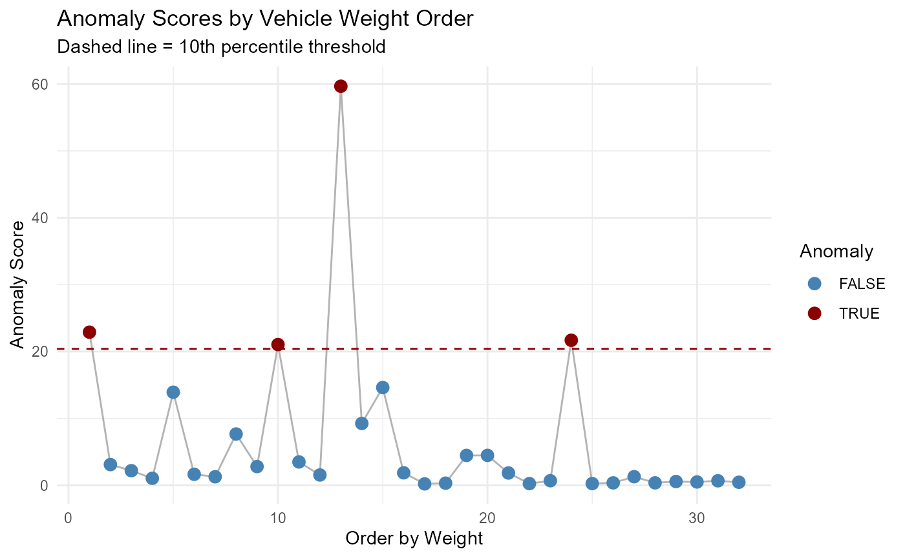
Using with Prediction
# Combine with regression predictions
X_reg <- mtcars[, c("cyl", "disp", "hp", "wt", "qsec")]
y_reg <- mtcars$mpg
# Train regression model
reg_model <- tab_pfn_regression(X_reg, y_reg, device = "auto")
# Get predictions
reg_preds <- predict(reg_model, X_reg, type = "numeric")
# Combine with anomaly scores
combined_df <- mtcars_with_scores %>%
select(car_name, anomaly_score, mpg) %>%
mutate(
predicted_mpg = reg_preds$.pred,
prediction_error = abs(mpg - predicted_mpg),
is_anomaly_10pct = anomaly_score <= threshold_10
)
# Compare prediction error for normal vs anomalous
error_comparison <- combined_df %>%
group_by(is_anomaly_10pct) %>%
summarise(
n = n(),
mean_error = mean(prediction_error),
median_error = median(prediction_error),
.groups = "drop"
)
print(error_comparison)## # A tibble: 2 × 4
## is_anomaly_10pct n mean_error median_error
## <lgl> <int> <dbl> <dbl>
## 1 FALSE 4 0.751 0.489
## 2 TRUE 28 1.55 1.41
# Plot
ggplot(combined_df, aes(x = is_anomaly_10pct, y = prediction_error)) +
geom_boxplot(aes(fill = is_anomaly_10pct), alpha = 0.7) +
scale_fill_manual(values = c("FALSE" = "steelblue", "TRUE" = "darkred"),
labels = c("FALSE" = "Normal", "TRUE" = "Anomalous")) +
labs(title = "Prediction Error: Normal vs Anomalous",
x = "Classification",
y = "Absolute Prediction Error (MPG)",
fill = "Classification") +
theme_minimal()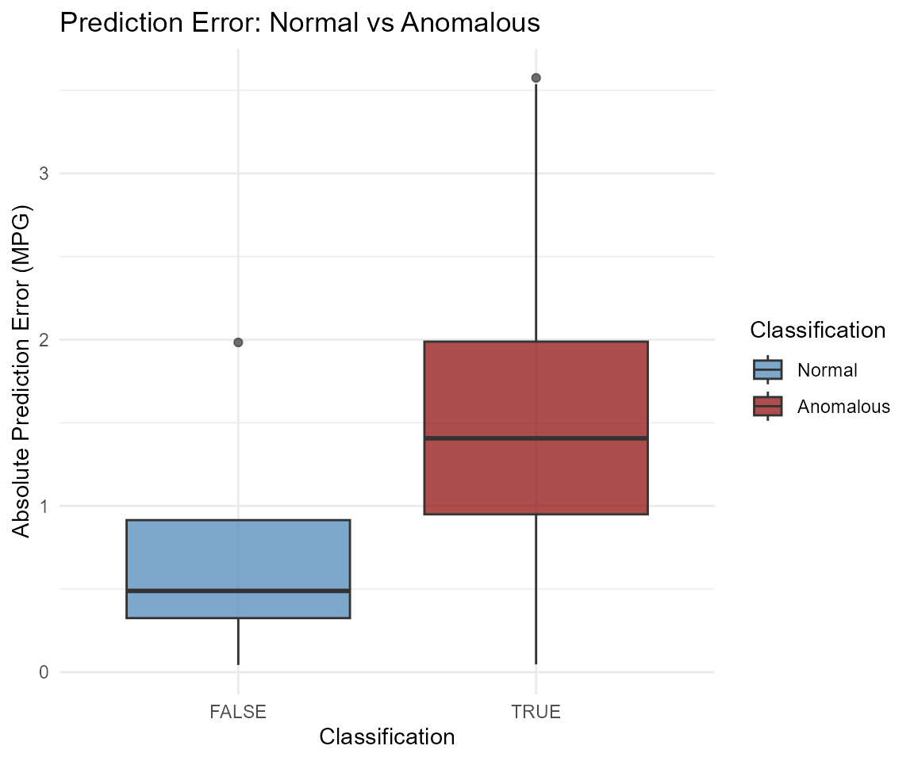
Summary
Unsupervised anomaly detection with TabPFN provides:
- No labeled data needed: Detects anomalies based on data distribution
- Probability-based scoring: Lower scores indicate more anomalous observations
- Flexible threshold selection: Choose appropriate threshold based on domain needs
- Multi-dimensional detection: Considers all features simultaneously
- Interpretable results: Can analyze which features drive anomalous behavior
Key applications: - Data quality monitoring - Fraud detection - System health monitoring - Novelty detection - Outlier analysis for model improvement
The method is particularly useful when: - You have unlabeled data - You need to identify rare or unusual patterns - You want to understand data distribution anomalies - You’re preparing data for supervised learning